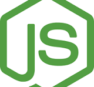
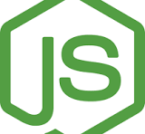

Grantaide, San Francisco Bay Area (Remote)
Developed AI-integrated (Chat-gpt4.0) React web applications with Preact, AWS S3, Amplify, EC2, Elastic Beanstalk, Typescript and high-performance Chrome Extensions which enhanced user experience and application functionalities by 40%. Utilizing Firebase Cloud Firestore for scalable, real-time database management, designing and developing server-side RESTful APIs with Flask and strategically placed indexes, resulting in a 20% reduction in data retrieval time. Mentored junior developers, overseeing bug testing, performance optimization of the website, defined and implemented front-end architecture using React and MUI, contributing to best practices and improved user experience by 20%. Collaborating with Data Engineers to build high-quality Firebase structure and indexing grant proposals outcoming accessibility of the data and adding new reactive features to an existing user. Created reusable UX components in React and TypeScript which contributed to attention-to-detailed architecture and better code readability